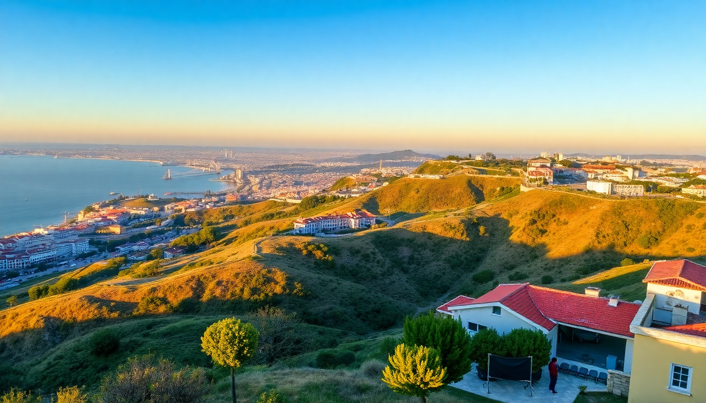

Best Time to Visit Portugal: Month-by-Month Guide for 2025

I’ve been to Portugal four times now, and the “best” time depends entirely on what you want. Do you want empty beaches and cheap flights, or perfect swimming weather and buzzing nightlife? I’ve done both, and this guide breaks down each month for 2025 so you can pick your window without the fluff.
When is the best time to visit Portugal for good weather?
For me, the sweet spot is late spring (May to early June) and early autumn (September to October). The crowds are thinner than in peak summer, but the sun is still out, and the water is swimmable in the Algarve by June.
- May in Lisbon — we walked the Alfama district without sweating through our shirts. The São Jorge Castle had short queues.
- September in Porto — the Douro Valley wine harvest is on. We booked a small-group tour through GetYourGuide and had the terraces almost to ourselves.
- October in the Algarve — still 24°C (75°F) in Lagos. We swam at Praia do Camilo without elbowing for towel space.
If you hate crowds, avoid August. If you hate rain, avoid November through February in Porto.
What is Portugal like in winter (December to February)?
Winter is quiet, cheap, and surprisingly charming — but only if you’re okay with drizzle and shorter days. We spent a January week in Lisbon and loved it, but we packed layers and a waterproof jacket.
- Lisbon in January — the city felt ours. We got same-day entry to the Jerónimos Monastery and had the Time Out Market food hall to ourselves at lunch.
- Porto in February — cold and wet. We stayed at Hotel da Música near the Bolhão Market and spent afternoons in port wine lodges like Graham’s. The rain made the tiled buildings look even richer.
- Algarve in December — most beach bars are shuttered. Albufeira’s strip is dead. If you want sun, skip it. We drove to Évora instead and explored the Roman temple in crisp, clear air.
Flights from the US and UK drop to under €300 round trip in January. Hotels in Chiado (Lisbon) run half the summer rate.
Is spring (March to May) a good time to visit?
Yes — March is still hit-or-miss, but April and May are prime. The almond trees bloom in the Algarve in March, and the crowds haven’t arrived yet.
- March in Porto — we rode the Tram 22 up to the Foz district and watched surfers in wetsuits. The weather was 15°C (59°F) and overcast, but the city’s custard tarts at Manteigaria warmed us up.
- April in Lisbon — Easter week gets busy, but the rest of the month is calm. We did a day trip to Sintra and walked the Pena Palace grounds without hour-long ticket lines.
- May in the Algarve — we stayed in a guesthouse in the old town of Lagos. The cliffs at Ponta da Piedade were stunning, and we kayaked into sea caves with a local guide. Water temps were still cool (18°C), but the sun was hot.
Book accommodation by February for May trips — good spots in Alfama and the Algarve coast fill up fast.
What about summer (June to August) — is it too crowded?
It depends on your tolerance. June is manageable. July and August are a zoo in the Algarve and Lisbon’s Belém district. We went in August once — never again.
- June in Lisbon — the Santos Populares street parties hit the Alfama and Bairro Alto neighborhoods. Sardines grilling on every corner. Crowds are festive, not suffocating. We found a quiet table at Taberna da Rua das Flores.
- July in the Algarve — we drove from Albufeira to Lagos and saw wall-to-wall sunloungers. Praia da Marinha was packed by 10 AM. Our Airbnb in the Algarve cost triple the May rate.
- August in Porto — surprisingly pleasant compared to Lisbon. The city empties out as locals head to the coast. We walked across the Dom Luís I Bridge without jostling.
If you must go in summer, pick Porto over Lisbon, and skip the Algarve’s crowded beaches for hidden coves near Carvoeiro.
What is autumn (September to November) really like?
September and October are my favorite months. The water is warmest in the Algarve (22°C in September), the harvest season is on in the Douro, and prices drop after mid-September.
- September in the Algarve — we stayed at a small hotel in Ferragudo, across the river from Portimão. Praia dos Caneiros was half-empty. We ate grilled sea bass at O Camilo in Lagos.
- October in Lisbon — we took the train from Cais do Sodré to Cascais for a day. The seaside promenade was quiet, and the seafood at Mar do Inferno was fresh. Rain hit twice in a week, but the sun always came back.
- November in Porto — gray and drizzly. We spent a rainy afternoon in the Livraria Lello bookshop (book tickets online — the queue was 45 minutes even in November). The city feels moody and romantic, but pack an umbrella.
November is the cheapest month for flights and hotels after January. The Algarve is mostly closed by mid-November — stick to Lisbon and Porto.
FAQ
Is Portugal worth visiting in December? Yes, if you want Christmas markets and low prices. Lisbon’s Praça do Comércio has a festive market with mulled wine and local crafts. Porto’s lights along the Ribeira are beautiful. Just expect rain and 12-15°C (54-59°F). The Algarve is too quiet for my taste.
When is the cheapest time to fly to Portugal? Late January and early February. We booked round-trip flights from New York to Lisbon for €280 per person in 2024. November is also cheap but rainier. Avoid July and August — prices double.
Should I visit the Algarve in March? Only if you want solitude and don’t mind cool weather. The beaches are empty, but swimming is too cold (16°C water). Hiking the cliffs at Ponta da Piedade is great. Most restaurants in Lagos’s old town are open on weekends but close on weekdays.
Conclusion
- Best overall weather: May, June, September, October — warm sun, swimmable water, manageable crowds.
- Best for budget: January, February, November — cheap flights and hotels, but pack for rain in Porto and Lisbon.
- Best for beaches: June and September — the Algarve is warm and less packed than July/August.
- Best for culture: April (Easter processions in Braga) and September (Douro harvest).
- Avoid if you hate crowds: August in the Algarve and Lisbon’s Belém district.